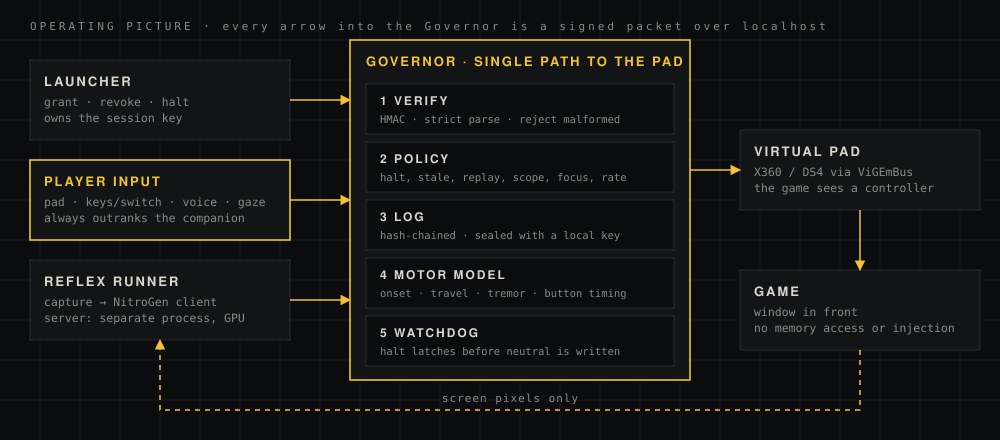

One principle
The player is the legend. PR-REX is the body double.
The player directs
Every controller output traces to a player intent or to a delegation the player granted. No grant, no output.
Control returns at once
Player input outranks the companion on every tick. There is no mode to escape from and no menu to find.
A body, not a backdoor
The companion sees the screen and presses a virtual controller. It never reads game memory, injects code, or moves faster than a human can.
Local by default
Play mode is offline. Inputs, voice and gaze never leave the machine. The network is for prep, to fetch models.
One path to the controller

What the Governor enforces
- Kill switch latches the halt, revokes every delegation, then writes neutral. Resume needs a new grant.
- Stale, replayed and out-of-order packets are dropped.
- Player input always passes and pre-empts the companion.
- Companion output needs an active delegation, limited to the game pack's scopes.
- Online mode: no full autopilot, and the player must be present.
- Companion output only while the game window is in front.
- Confidence floor, per-source rate limit, menu buttons stripped.
- Watchdog: no output played for 500 ms eases the pad to neutral.
- Shutdown and faults leave the pad neutral. The log is sealed on close.
- No game memory access, no code injection. The game sees a controller.
What has run, and what has not
| Area | State | Evidence |
|---|---|---|
| Governor, policy, sealed log | BUILT · TESTED | 132 tests, Linux and Windows CI |
| Virtual pad and kill switch | VERIFIED | Reference machine, 2026-10-21; STOP file halted a live session 2026-10-24 |
| Motor model scheduling | FIXED | October review F1/F2 with regressions |
| Voice, gaze, player input, calibration | BUILT | Keyboard input ran live; physical pad, voice, gaze and calibration not yet run on hardware |
| Window capture | VERIFIED | Live session 2026-10-24, median 3.3 ms per frame |
| NitroGen round trip and latency | VERIFIED | About 225 ms per chunk on a test frame; median 450 ms live with the game running |
| Play quality | UNVERIFIED | First run: little progress in 40 s, then left the race. NitroGen ran unconditioned |
| Network lockdown | OPTIONAL | Not required during development; netcheck is the test |
Nothing here is claimed before it has run. The full record is in the verification record.
Only stage 1 is committed
Smoke test
SuperTuxKart, offline. The companion drives a lap and the report is read end to end.
Measure and tune
NitroGen latency and play quality without pausing the game. Fit the player's motor profile.
Shared control
Gaze, voice and pad working at once. More game packs.
Planner
Spoken orders become intents the Governor still approves.
Stages are not to scale and carry no dates. The smoke-test data decides whether the later gates hold.